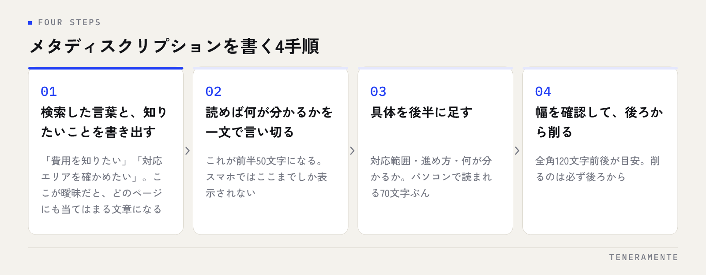

検索結果に並ぶ見出しの下、2〜3行の説明文。これがメタディスクリプションです。順位を直接動かす要素ではありませんが、同じ順位でも開かれるページと素通りされるページを分けています。書き方には、決まった順番があります。
📌 この記事の結論
メタディスクリプションは順位ではなくクリック率を動かす要素です。全角120文字前後を目安に、前半で「誰の何の悩みに答えるページか」を言い切り、後半に具体を足します。ページごとに1つずつ、重複なく書いてください。
01メタディスクリプションは、順位ではなくクリック率を動かす
メタディスクリプション（meta description）は、HTMLの<head>に書く説明文です。検索結果では、青いタイトルの下に表示される灰色の文章として使われます。この部分を含めた検索結果の1件分の表示をスニペットと呼びます。
まず前提として、この要素は検索順位を直接引き上げるものではありません。Googleは、メタディスクリプションをランキングの要素として使わないという立場を示しています。ここにキーワードを詰め込んでも、順位は動きません。
ではなぜ書くのか。検索した人が、開くページを選ぶときに読んでいるからです。タイトルで興味を持った人が、その下の2〜3行を見て「自分の探しものに近いか」を判断します。順位を上げる施策には時間がかかりますが、説明文の書き直しは今日できて、翌週には反応が見えます。タイトルタグの書き方とあわせて整えると、検索結果での見え方がまとまります。
02文字数の目安は全角120文字前後。スマホでは半分以下
メタディスクリプションの文字数は、パソコンで全角120文字前後、スマートフォンで全角50〜70文字前後が表示の目安です。これを超えた部分は「…」で省略されます。
つまり、スマホで読まれることを考えると、前半のおよそ50文字で用件が伝わっている必要があります。パソコンの表示幅いっぱいに書いた文章の後半は、多くの閲覧者には届きません。
前半50文字・後半70文字で役割を分ける
前半50文字に「誰の、何の悩みに答えるページか」を置き、後半70文字に具体的な内容（対応範囲・進め方・何が分かるか）を足す。こう分けておけば、スマホで切れても意味が通り、パソコンでは情報量のある説明文になります。
文字数は厳密な上限ではなく、表示幅で切られています。数え方に神経を使うより、前半で言い切る形になっているかを確認するほうが実用的です。
03メタディスクリプションの書き方は、この4手順で決まる
文章力は要りません。次の順に埋めていけば形になります。

まず、そのページを開く人が検索したときに使った言葉と、知りたいことを書き出します。「費用を知りたい」「対応エリアを確かめたい」「やり方を調べたい」。ここが曖昧なまま書き始めると、どのページにも当てはまる文章になります。
次に、そのページを読めば何が分かるのかを一文で言い切ります。これが前半になります。そのうえで、他社との違いや具体的な対応範囲を後半に足し、最後に幅を確認して後ろから削ります。
説明文は、ページの要約ではありません。検索した人への「ここに答えがあります」という返事です。
04ページの種類ごとに、書く中身は変わる
同じ型をサイト全体に流用すると、検索結果でどのページも同じに見えます。ページの役割ごとに、入れる中身を変えてください。
| ページの種類 | 前半に置くこと | 後半に足すこと |
|---|---|---|
| トップページ | 何の会社か・どこで・誰向けか | 主なサービスを2〜3語で |
| サービスページ | そのサービスで解決できること | 対応範囲・進め方・費用の考え方 |
| 事例・実績 | どんな業種の、どんな課題か | 取り組んだ内容と結果の要点 |
| ブログ記事 | 記事で答える問い | 読むと分かること・対象読者 |
| 会社案内 | 社名・所在地・事業内容 | 沿革や体制など、確認されやすい情報 |
判断に迷ったら、そのページを開いてほしい人がどんな言葉で検索するかに立ち返ります。サイト全体の設計から見直す段階であれば、ホームページ制作費用のガイドで進め方を確認してから細部に入ると、手戻りがありません。
05やりがちな失敗と、その直し方
現場でよく見かけるのは、次の5つです。
- 全ページ同じ文章：テンプレートのまま公開されている。ページごとに1つずつ書き分ける
- キーワードの羅列：「名古屋 ホームページ制作 格安 SEO」のような並び。読み手に向けた文章に直す
- 会社の紹介だけで終わる：「私たちは◯◯な会社です」。読み手が得るものを書く
- 本文にない内容を書く：中身と合っていないと、検索結果で書き換えられやすくなる
- 未設定のまま放置：Googleが本文から自動で抜き出すため、意図しない一文が出ることがある
まず「未設定」と「重複」を潰す
全ページを一覧にして、空欄と同じ文章のものに印を付けてください。書き方の巧拙より、この2つを解消するほうが先に効きます。Search Console の管理画面や、サイト内のページ一覧から確認できます。
06書いた文章が、検索結果に出ないことがある
設定したはずの説明文と違う文章が表示される。これは不具合ではありません。Googleは、検索された言葉に対してより適切だと判断した場合、ページ本文から文章を抜き出して表示します。同じページでも、検索語によって表示される説明文が変わることがあります。
書き換えが起きやすいのは、説明文が極端に短い場合、キーワードが並んでいるだけの場合、そしてページの中身と合っていない場合です。逆に、本文の内容を素直に要約した文章は、そのまま使われやすいということになります。
書き換えられたときに、無理に元へ戻そうとする必要はありません。まず本文の冒頭を見直してください。読み手の問いに対する答えが冒頭に書かれていれば、抜き出される文章も自然と的確になります。
07公開したら終わりにせず、見直しを回す
書きっぱなしにせず、反応を見て直します。手順は次のとおりです。
- Search Console で、表示回数はあるのにクリック率が低いページを洗い出す
- そのページが実際にどんな検索語で表示されているかを確認する
- 説明文の前半50文字を、その検索語に答える形に書き直す
- 直した日付を記録し、数週間おいてから同じ指標を見比べる
- 一度に直すのは数ページまで。まとめて変えると、何が効いたか分からなくなる
クリック率が変わらない場合、原因が説明文にないこともあります。検索順位が上がらない原因もあわせて確認すると、手を付ける順番が整理できます。
メタディスクリプションを書かないと、順位は下がりますか？
キーワードは入れたほうがよいですか？
ブログ記事にも毎回書くべきですか？
08まとめ：説明文は、今日から直せる一手
メタディスクリプションの書き方は、前半50文字で「誰の何の悩みに答えるか」を言い切り、後半に具体を足し、全角120文字前後に収める。ページごとに書き分け、本文の内容と合わせる。この順番です。順位は動かしませんが、同じ順位での開かれ方は変わります。
そして、この改善が回るかどうかは、直したい人が自分で直せる状態にサイトがあるかで決まります。説明文ひとつ変えるのに毎回依頼が必要な作りだと、小さな見直しが積み上がりません。
TENERAMENTEでは、公開後に自分たちで育てられることを前提としたHP/LP作成をお引き受けしています。いまのサイトの見え方を整えたい、あるいは作り直しを検討中という段階でしたら、お問い合わせからご相談ください。